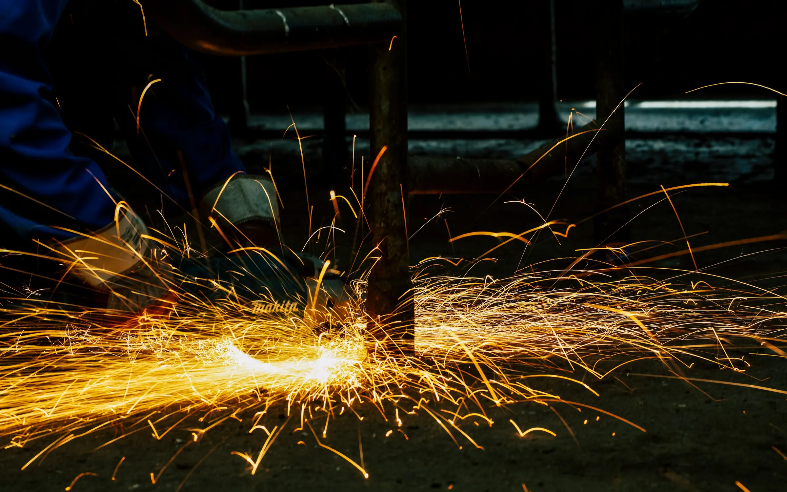
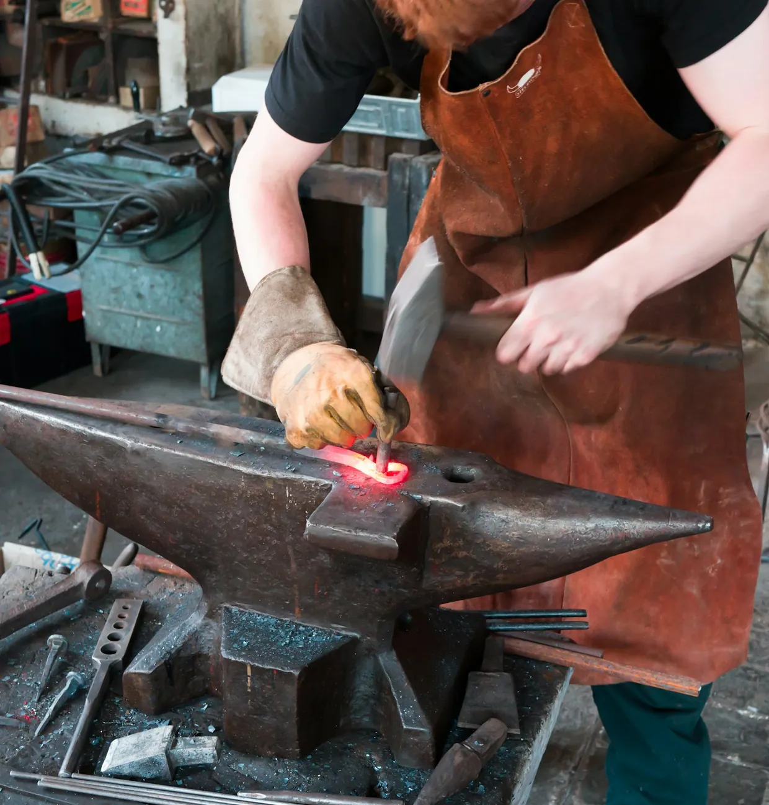
Ogni opera viene progettata con te, realizzata nel nostro laboratorio e posata dai nostri artigiani. Mantieni lo stesso referente dal primo incontro fino alla fine del cantiere.
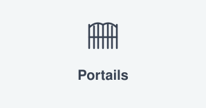
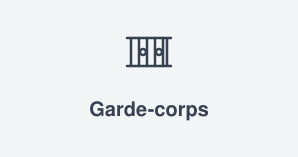
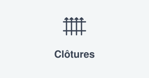
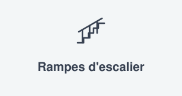
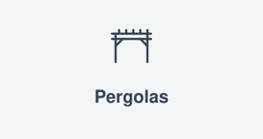
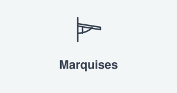
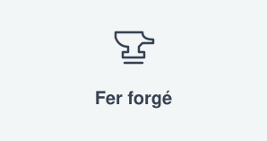
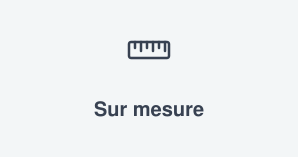
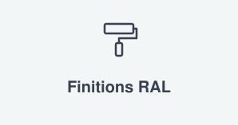
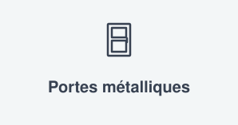
Cancelli a battente o scorrevoli in ferro battuto, acciaio o alluminio, progettati per il tuo ingresso e predisposti per la motorizzazione.

Parapetti per balconi, terrazze o soppalchi, conformi alle norme di sicurezza e abbinati allo stile della tua facciata.
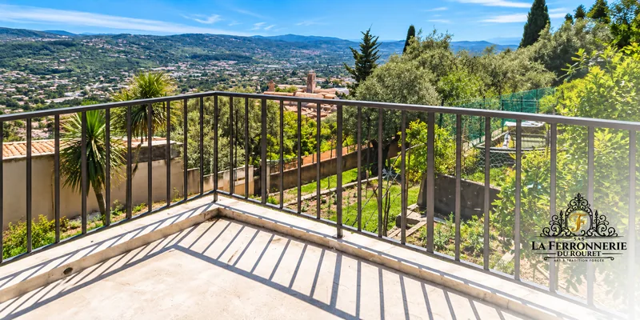
Ringhiere e corrimano forgiati e curvati a mano per seguire ogni gradino della tua scala, all'interno come all'esterno.
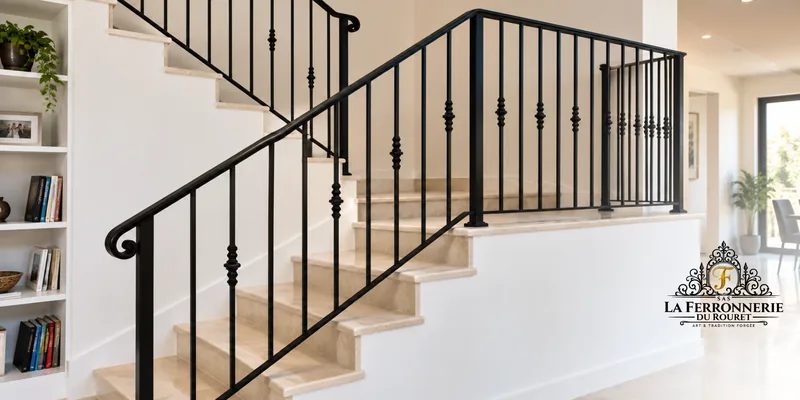
Pergole, gazebo e pensiline in metallo per riparare una terrazza o un ingresso, progettati in armonia con la tua casa.
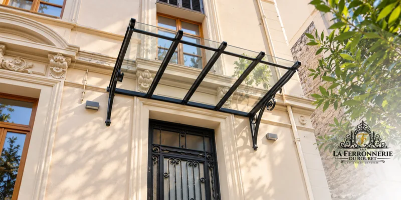
Recinzioni, inferriate e pannelli traforati in ferro battuto per delimitare e proteggere il tuo terreno senza rinunciare all'eleganza.
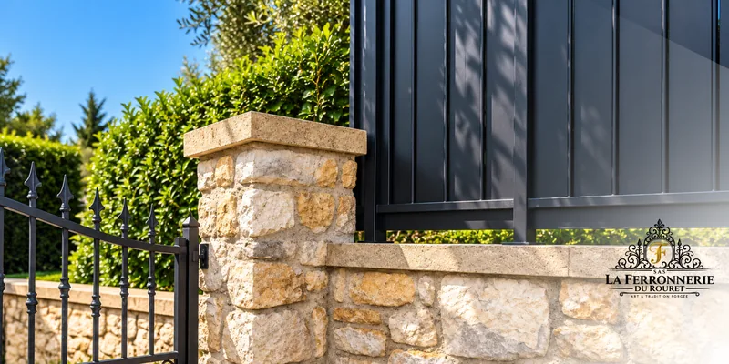
Porte d'ingresso, porte di servizio e cancelletti in acciaio o ferro battuto, pensati per la sicurezza come per l'aspetto del tuo ingresso.
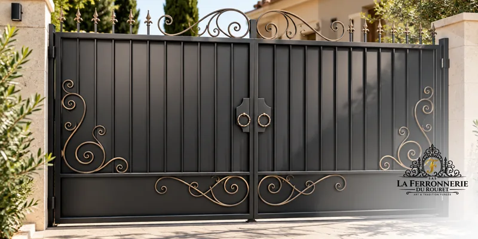
Cancelli a battente o scorrevoli in ferro battuto, acciaio o alluminio, progettati per il tuo ingresso e predisposti per la motorizzazione.